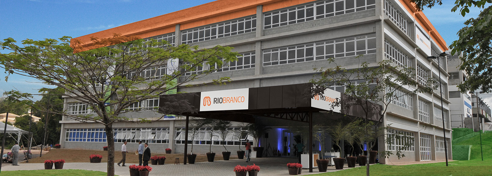

Faculdades Integradas Rio Branco
As Faculdades Integradas Rio Branco são mais uma iniciativa da Fundação de Rotarianos de São Paulo, entidade sem fins lucrativos e criada em 1946 por associados do Rotary Club São Paulo.
A proposta básica das Faculdades Integradas Rio Branco partiu do conceito de que a formação do profissional deve ser projetada para quando ele efetivamente assumir suas responsabilidades.
Em outras palavras, preparamos o profissional para além das realidades de hoje, para o cenário do futuro.
É uma meta ousada que será alcançada por cursos superiores de excepcionais características curriculares e extracurriculares, com professores capacitados e experientes a uma infra-estrutura desenhada para cursos de alta qualidade.
As Faculdades Integradas Rio Branco inserem-se no novo espírito, cultivando os elevados princípios e valores humanos, os projetos pedagógicos articulam-se entre as diversas áreas do saber em consonância com projetos individuais dos alunos. A interdisciplinaridade está presente desde a arquitetura do Campus até nos planos de formação profissional. O projeto pedagógico de cada curso está articulado aos macro-eixos curriculares (presentes em áreas do conhecimento) e dimensões interativas com a realidade. Portanto, os programas oferecidos possibilitam momentos de reflexão, elaboração de soluções criativas e aplicação à realidade.
O professor do século XXI deve criar estratégias e sistemas de ensino aprendizagem que privilegiam aos seus aprendizes a antecipação de situações concretas, a autonomia do saber, a inovação, a criatividade, o desenvolvimento do espírito empreendedor e a perspectiva interdisciplinar do Saber.
Nosso corpo docente é formado por quase 90% de mestre e doutores.
Fundação de Rotarianos de São Paulo
A Fundação de Rotarianos de São Paulo desenvolve e estimula programas educacionais em favor da comunidade, estendendo seus benefícios a toda a população, não importando origem, cor, credo ou condição social. Encara a educação como um bem sagrado que todos merecem compartilhar.
O desenvolvimento profissional docente, o benchmarking nacional e internacional, os investimentos em tecnologia de ponta, o planejamento estratégico e a governança corporativa marcam a gestão da Fundação de Rotarianos de São Paulo, sempre atenta às mais modernas práticas na área educacional.
- Colégio Rio Branco
- Da Educação Infantil ao Ensino Médio
- Faculdades Integradas Rio Branco
- Ensino a Distância Rio Branco
- Centro Profissionalizante Rio Branco
- Programa de SocioAprendizagem Profissional (Lei do Aprendiz)
- Programa de Qualificação Profissional para Surdos e Pessoas com Deficiência Física
Centro de Educação para Surdos Rio Branco- Educação Bilíngue - Língua Brasileira de Sinais (Libras) e Língua Portuguesa
- Programa de Estimulação do Desenvolvimento (PED) - 0 a 3 anos
- Educação Infantil e Ensino Fundamental I
- Inclusão em escolas regulares a partir da 5ª série (com acompanhamento de tradutores/intérpretes)